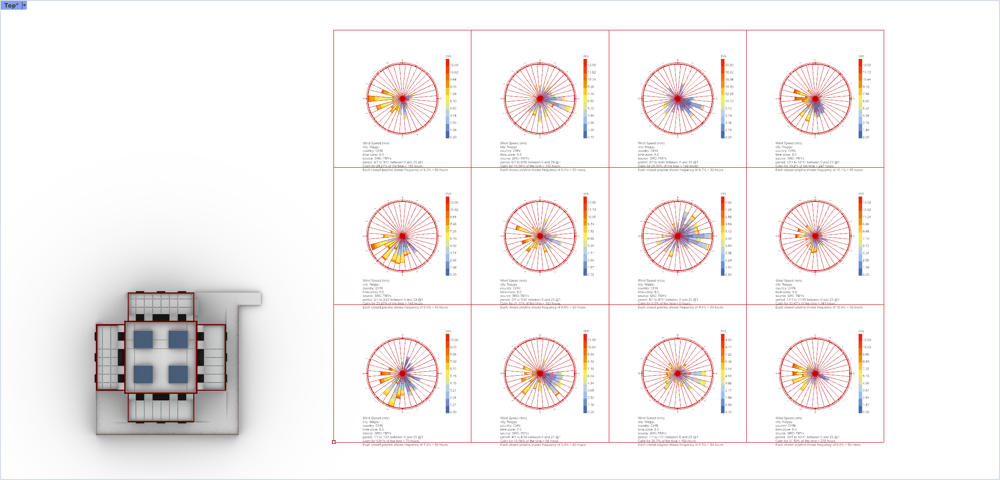
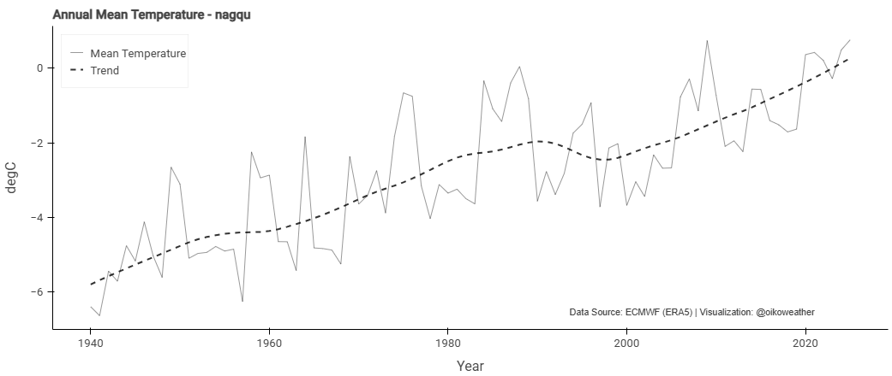
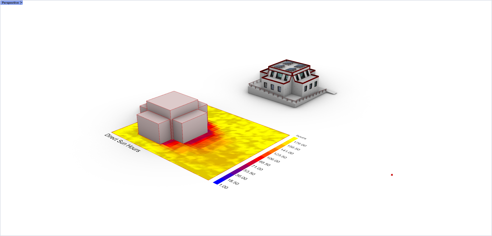
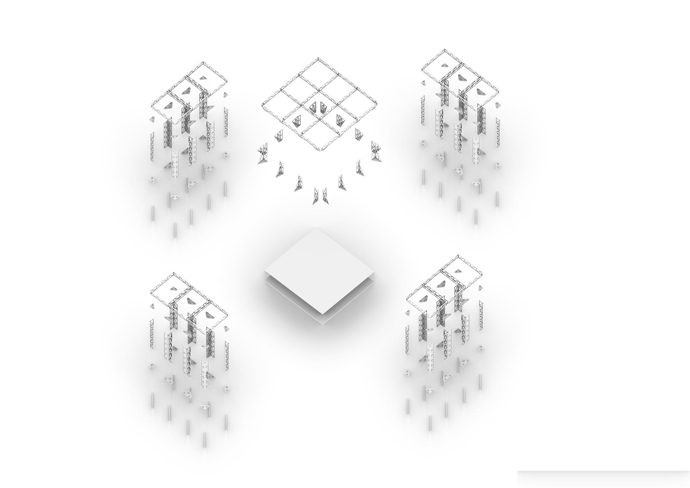

前期分析
7 大子目 · 从场地条件到建造逻辑的全面解读
1 · 自然地理环境
本课题设计场地位于央木村，村庄位于西藏那曲市班戈县佳琼镇，地处青藏高原北部藏北高原，海拔约 4697 m。
当地气候属于高原亚寒带季风气候，全年低温，温差大，太阳辐射强，积雪期长。西南风盛行。
- 地理位置：90°E，32°N（藏北高原腹地）
- 海拔：4697 m
- 气候：高原亚寒带季风气候 · 全年低温
- 辐射：太阳辐射强 · 积雪期长
- 风向：西南风盛行

2 · 水文与冻土情况
水文及用水情况：取水方式较为朴素，多为冰川融雪供水。虽然居民生活用水与畜牧所需水源进行了空间上的区分，但是并没有接入城市自来水管网，卫生条件上较为欠缺。
思考：需考虑水资源再利用。
冻土情况：央木村冬季土壤冻深约 1.5 - 2.5 米，冻结期为 10 月下旬至次年 4 月中下旬，全年冻结时间约 6 个月。
思考：出于对场地的保护和快速搭建的需求，该条件完全限制了对土地的就地作业，无法对场地本身做出太多空间上的处理。一方面出于恶劣环境的限制，另一方面更是提出了快速搭建的要求。

3 · 经济、人口与建筑
主导产业：传统畜牧业：牦牛、藏羊养殖为主，受限于草场保护政策与降雪减少导致的草料短缺。商业：2 家餐馆兼商店，服务本地基本需求，但规模小、附加值低。
人口情况：村内居民约 600 人，男女比例 1:1，女性稍多。村庄共有 100 多户人家，每户约 2-3 个小孩，青年外出务工。目前村里以老年人和妇女儿童为主。当地主要以传统牧业为主。居民分布较为集中，少数家庭居住较为零散，最近可达 20 公里。但生活内并没有现代医疗场所，乡村医疗服务基站建设刻不容缓！
基础设施情况：
- 电力：依靠太阳能光伏和夜间发动机发电，未接通电网
- 交通：从班戈县到此村庄有将近两个小时车程，道路情况为半柏油路半土路，目前柏油路的维修进度止步于此村庄
- 思考：能源如何能够尽量自给自足？

4 · 建筑文化分析
建筑色彩：西藏建筑最常用的色彩有白、红、黄、黑四种，其中民居建筑中常用白、红、黑三色。
| 颜色 | 意义 | 常见用途 |
|---|---|---|
| 白色 | 纯洁、吉祥 | 建筑外墙 |
| 红色 | 权力、庄严 | 寺庙、宫殿外墙、居民檐口、女儿墙 |
| 黄色 | 神圣、世俗 | 寺庙屋顶、宗教重要建筑外墙 |
| 黑色 | 威严、驱邪 | 建筑门套、窗套 |
建筑装饰：民居建筑的外立面设计中非常重视门窗装饰（檐口、窗框花纹颇具特色）。

5 · 材料研究背景
那曲地区属于高原亚寒带季风气候。核心气候特征：海拔高（平均 4500m 以上）、气温低（年平均气温 -2~2℃，极端低温 -40℃）、昼夜温差大（可达 20℃）、紫外线强、多风沙、氧气稀薄。
那曲为季节性冻土区，冬季冻土膨胀会顶起建筑基础，夏季冻土融化导致地基沉降，易造成墙体开裂、门窗变形、管线断裂，直接影响医疗基站的结构安全和设备运行。乡村医疗基站作为对偏远地区民居"建筑技术优先适配极端气候，同时兼顾施工便捷性（当地建材运输难、施工队伍技术水平有限）和后期低成本维护（乡村运维能力弱）"。
核心原则：以下从结构、围护墙体、门窗、保温、防水五大核心部位，结合三大核心原则给出材料选型方案及理由。
- 结构：轻量、抗冻、易施工
- 围护：保温、抗风、易维护、高度集成化
- 门窗：严寒密封、藏式文化回应
- 保温：150mm 岩棉 + 多层构造
- 防水：金属面层 + 咬合连接

6 · 基于极端地理限制的建造逻辑与分件策略
一、核心建造逻辑：
- 时空置换逻辑：将高耗氧、高风险、高精度的工序（如精密焊接、UHPC热养护、洁净室密封）从"低压缺氧的施工现场"剥离，逆向转移至"环境可控的平原工厂"。分件的本质是工业化劳动力对高原体力劳动的替代。
- 容差解耦逻辑：基础构件负责吸收地形误差，上部结构负责保持高精度，两者通过可调节节点实现"解耦"。
- 工效适配逻辑：分件尺度不再以机械起重极限为唯一标准，而以高原人体生理阈值为红线。分件重量需适配班戈环境下双人配合的体力极限，通过降低单件作业强度，换取整体装配效率。
二、分件的工程意义：
- "不可控"转化为"可控"：通过分件，将受天气、冻土影响极大的现场"不确定性工艺"，转化为工厂流水线上的"确定性产品"。
- 物流与装配的动态平衡：在"体块运输（高成本/低现场工时）"与"散件运输（低成本/高现场工时）"之间建立最优解，实现总工程造价与工期的双重控制。
三、阶段划分：
- 阶段一：基础与地坪系统（离散化接触 + 容差管理）
- 阶段二：结构骨架系统（二元模数化 + 集成装配）
- 阶段三：围护与面层系统（功能复合化 + 快速闭合）

7 · 案例学习 + 课题任务解析
案例：前工院轻钢大跨结构构件可循环利用房屋（南京 · 2017 · 东南大学 · 220m²）。
课题任务解析：
- 主线任务 — 医疗功能设置：医疗服务基站的单体建筑面积约 200m²。结合当地情况，建议观察输液室内设置吸氧区，另需考虑救护车停放问题。空间利用率可结合健康教育区、妇幼保健检查室（配置可移动检查床）。
- 支线任务 — 快速搭建 + 能源"危机"：央木村的极端条件体现在：环境本身恶劣的同时，没有城市管网的水电系统。这意味着这个空间不仅仅要运行医疗空间的职能，还需要优先解决水电光热的问题。
- 设计思路：由一个框架单元延伸到一个建筑体量。从结构上考虑，桁架梁与桁架柱的搭建简单，结构强度高，且足够预制化、标准化。从自保障角度，屋顶空间可以通过太阳能光伏板解决部分能源问题，楼板下空间可以用于储能、水循环系统设置。